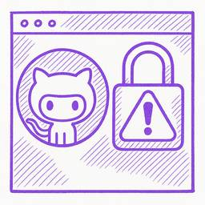
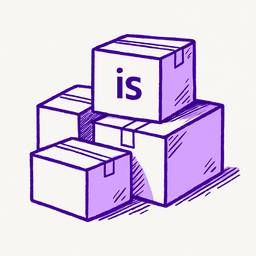
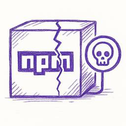
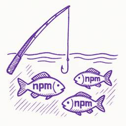
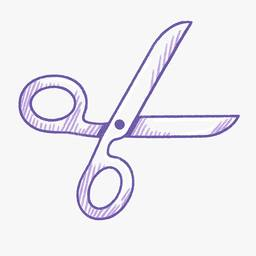

Socket
フィード
AI + a16z Podcast: Vibe Coding, Security Risks, and the Path to Progress
Socket
Socket CEO Feross Aboukhadijeh and a16z partner Joel de la Garza discuss vibe coding, AI-driven software development, and how the rise of LLMs, despite their risks, still points toward a more secure and innovative future.
1日前

Toptal’s GitHub Organization Hijacked: 10 Malicious Packages Published
Socket
Threat actors hijacked Toptal’s GitHub org, publishing npm packages with malicious payloads that steal tokens and attempt to wipe victim systems.
3日前
Surveillance Malware Hidden in npm and PyPI Packages Targets Developers with Keyloggers, Webcam Capture, and Credential Theft
Socket
Socket researchers investigate 4 malicious npm and PyPI packages with 56,000+ downloads that install surveillance malware.
3日前

npm ‘is’ Package Hijacked in Expanding Supply Chain Attack
Socket
The ongoing npm phishing campaign escalates as attackers hijack the popular 'is' package, embedding malware in multiple versions.
4日前
Critical Vulnerability in Popular npm form-data Package Used Across Millions of Installs
Socket
A critical flaw in the popular npm form-data package could allow HTTP parameter pollution, affecting millions of projects until patched versions are adopted.
4日前
Bun 1.2.19 Adds Isolated Installs for Better Monorepo Support
Socket
Bun 1.2.19 introduces isolated installs for smoother monorepo workflows, along with performance boosts, new tooling, and key compatibility fixes.
5日前

Active Supply Chain Attack: npm Phishing Campaign Leads to Prettier Tooling Packages Compromise
Socket
Popular npm packages like eslint-config-prettier were compromised after a phishing attack stole a maintainer’s token, spreading malicious updates.
8日前

npm Phishing Email Targets Developers with Typosquatted Domain
Socket
A phishing attack targeted developers using a typosquatted npm domain (npnjs.com) to steal credentials via fake login pages - watch out for similar scams.
8日前

Knip Hits 500 Releases with v5.62.0, Improving TypeScript Config Detection and Plugin Integrations
Socket
Knip hits 500 releases with v5.62.0, refining TypeScript config detection and updating plugins as monthly npm downloads approach 12M.
8日前

Open Source Maintainers Feeling the Weight of the EU’s Cyber Resilience Act
Socket
The EU Cyber Resilience Act is prompting compliance requests that open source maintainers may not be obligated or equipped to handle.
9日前